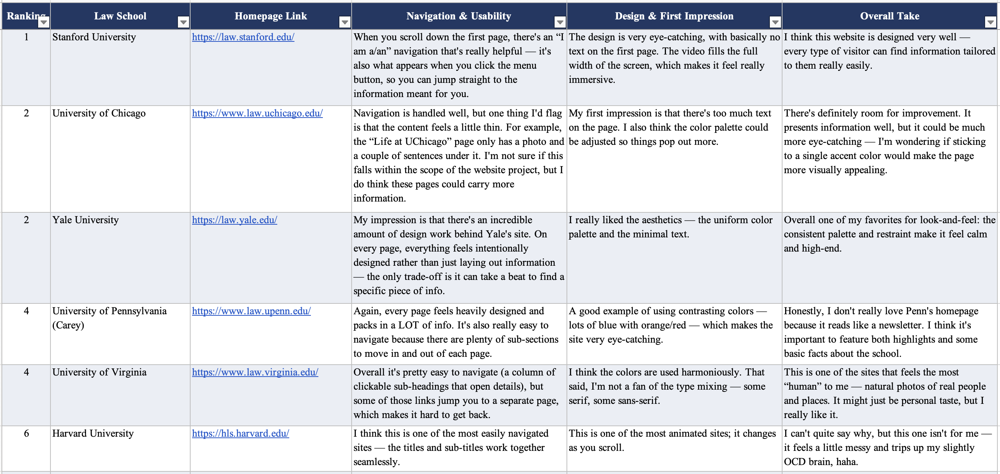
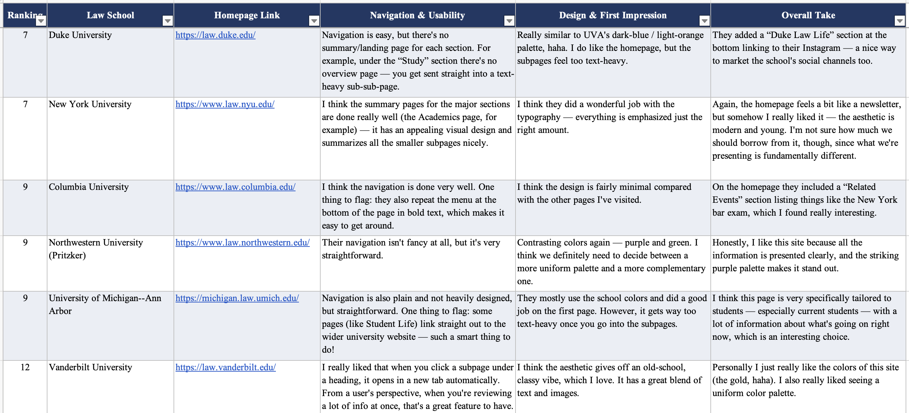

← Case Studies
Case Study 06
UChicago Law School
Communications Office Intern · The University of Chicago Law School · Jun 2026 – Present
Less than a month in — benchmarking 15 law schools to shape what comes next.
15 law school sites benchmarked · Jun 2026 – Present
Context
- Part-time role, started June 2026 — unrelated to the law firm client work covered elsewhere on the site; this is in-house communications for the law school itself, which is a new endeavor into marketing in an institutional setting
- Produced and edited short-form video content for the school's social channels, shifting from a static-post approach to video-first content with branded title and end cards
- Compiling a yearbook-style publication for the school — structuring and organizing a large volume of information, a lower-lift organizational task included here for range
- Benchmarked 15 top-ranked U.S. law school websites — navigation design, visual hierarchy, information architecture — to inform recommendations for an upcoming UChicago Law website redesign

